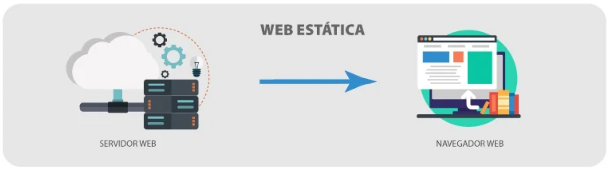
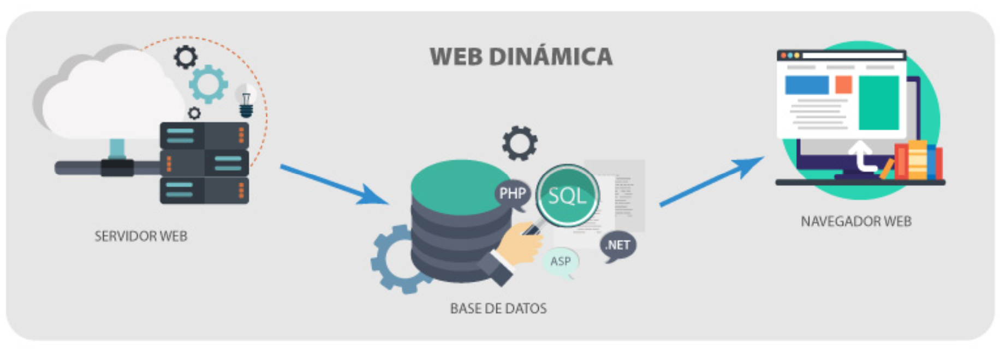

"Web application development refers to the process of creating computer applications that run in a web browser. These apps are designed to work on a variety of devices and operating systems, and can be accessible via the Internet or a private network. The development of web applications involves several stages, which may include user interface design, coding software, integration with databases and other systems, testing and implementation. Web developers use programming languages such as HTML, CSS, JavaScript and other web programming languages to create applications that are interactive and dynamic. Web applications can be very diverse, from simple applications such as contact forms and static web pages, to applications complex as content management systems, online stores and social networks. Web application development can also involve the use of frameworks and software libraries, as well as the integration of technologies such as artificial intelligence and machine learning."
"Static web applications are websites that do not require interaction. with the servers to display your content. This means that the content of the page is displayed in the same way to all users who view it. visit, without dynamic changes based on user interactions or the data stored in the database. This website can be placed on static servers such as the Amazon S3 page or GitHub, which means that dynamic web servers like Apache or Nginx they are not necessary to accommodate the site.
"These applications are created with programming languages on the server side, such as PHP, Python, or Ruby, and run on a dynamic web server such as Apache or NGINX. In short, dynamic web applications offer the user more interactive and more customized and are ideal for websites that require extended functionality and the interaction of more users."
"Content Manager Software (CMS) is a platform that users may create, publish, manage and edit content on the website without Advanced programming knowledge. With CMS, users can create and publish content through simple user interfaces. This makes it easier to create and maintain a website. With CMS, users can create and publish content in various formats, such as articles, images, videos and audio. It is also useful for collaborative websites because the Users can collaborate with the creation and administration of content. In short, CMS is a tool that helps users to create and publish content without the need for advanced knowledge of programming, so which is useful for creating and managing content on the website."
"Electronic commerce refers to the purchase and sale of products and services online through a digital platform. E-commerce sites can vary depending on the complexity and the functionality, in small online stores that sell niche products for large companies into electronic trading companies, such as Amazon, which sell a wide range of products and services around the world. E-commerce sites may also use digital marketing methods, such as search engine optimization (SEO), content, marketing, online advertising and email to attract new customers and increase sales. E-commerce sites are ideal for companies that want to expand their capabilities and sell products and services online."
"A Portal Web App is an application that acts as a centralized platform to access a variety of online services and resources. These portals are generally used by companies, organizations and agencies governments to give their clients or users access to information and resources. Web App portals are ideal for companies and organizations that centralize their online services and resources and offer their users a personalized experience. In short, web application portals are web applications that offer a centralized platform for online services and resources. They offer users a personalized experience and are ideal for companies and organizations that want centralize your online services and improve efficiency and internal cooperation."